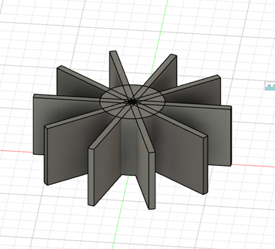
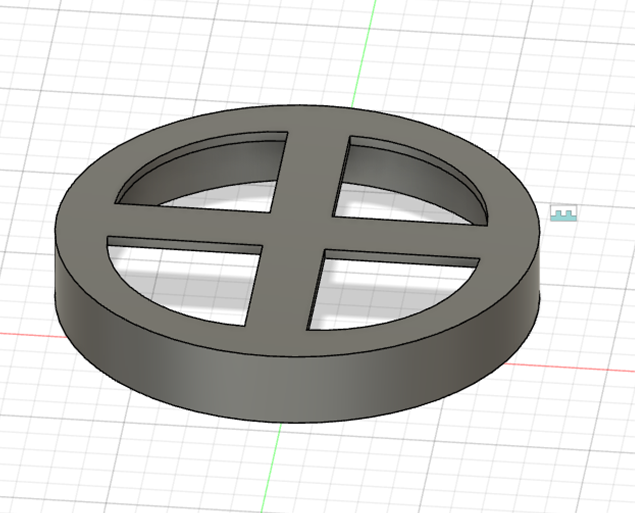
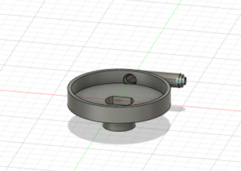
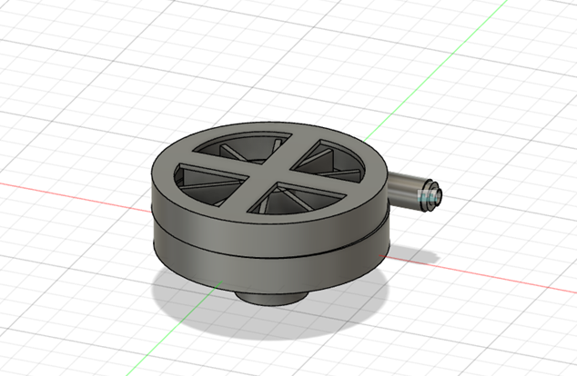
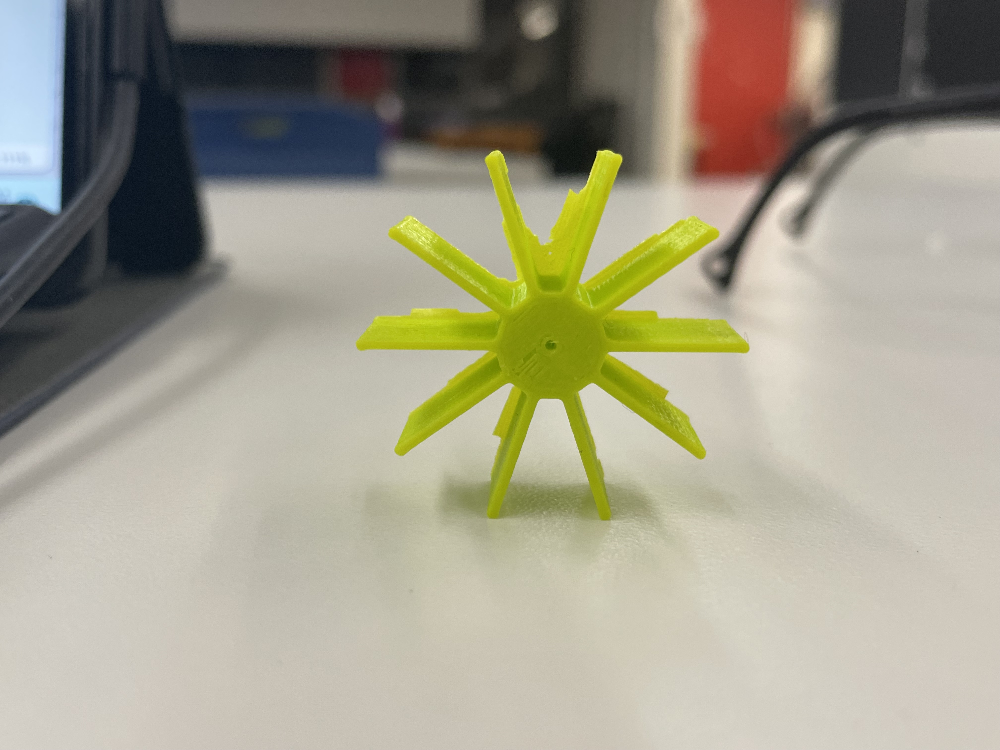
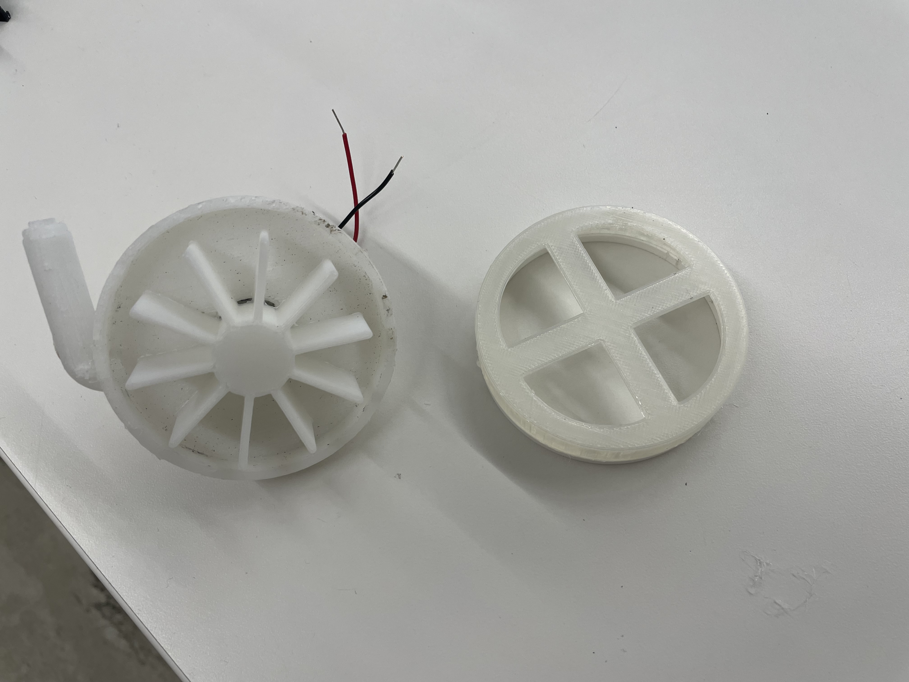

WEEK 4: 3D PRINTING
<br>
<b>Goal</b>
This week we were tasked with 3D printing a component that would be helpful for our final project. I wanted to experiment with the feasibility of making a functional pump using 3D printed parts. However, I also wanted to start small given the modelling difficulties and long print times with complicated parts, so I decided to make a centrifugal pump.
I took inspiration for my shape from [this](https://www.instructables.com/3D-Printed-Water-Pump/) post, but decided to model everything from scratch so I could improve my Fusion 360 skills. Since I was only familiar with extruding and revolving as a means of creating 3D objects, it was very difficult for me at first to make certain parts such as the propellor and tube protrusion. However, after learning about sweep and circular pattern functions, I was able to make both shapes fairly easily.
I decided to split my pump into three different components: the bottom (with space for a dc motor to be attached), the propellor, and the top. The fusion 360 designs for each are showed below.
<div class = "center">

</div>
<div class = "center">

</div>
<div class = "center">

</div>
<div class = "center">

</div>
<b>3D Printing</b>
<u> First Print Test </u>
I decided to print a small propellor to test the PRUSA printer. The slicing was fairly simple for this component since there were no overhanging parts. However, just to be safe I decided to add a brim. The print time was around 20 minutes and the results were good! The material seemed fairly strong and rigid so I concluded that it could be used as a propellor.
<div class = "center">

</div>
<u> Printing Parts for my centrifugal pump </u>
<u> Bottom piece </u>
This was my most complicated printing piece by far. For my first print I decided to put support everywhere and rotate the piece so that the bottom was were the dc motor would be placed later on. This created a print time of 3h40m. When my print was finished It was incredibly hard and time consuming to remove the slicing, especially from the circular tube (shown in previous designs). Once I had finished removing the support I realized my design had been scaled down in the printing process. I didn’t understand how this had happened at first but then I noticed that my prusa slicer software was on the mini prusa setting and not the Original Prusa MKS. This was incredibly frustrating!
I reprinted the bottom piece, this time only placing support on the bottom of my component and flipping it so that the dc motor component would be printed last. This turned out much better, was faster by about an hour (2h30m), and the sizing was correct. Hooray!
<u> Propellor </u>
This component was fairly straightforward as it was identical to my practice print only larger. The print time was 43 minutes minutes and there were no complications with slicing as no brim or support was needed.
<u> Top Piece </u>
This component was also straightforward and only took 41 minutes. In hindsight however, I should have added a larger gap between the top and my propellor component. The spacing was too tight and preventing the propellor from spinning when I connected it to the motor. As a result I had to 3d print and extension between the bottom and top piece. Luckily this only took 10 minutes more.
<i> The final gcode and stl files for all three components (after some trials) can be found below: </i>
<a download href='../04/bottom_pumo_new.stl'>Download STL file for bottom pump component </a>
<a download href='../04/propellor(new)_Layla.stl'>Download STL file for propellor component </a>
<a download href='../04/top_pump.stl'>Download STL file for top pump component </a>
<a download href='../04/propellor(new).gcode'>Download my gcode for propellor slicing </a>
<a download href='../04/bottom_pump_(new2).gcode'>Download my gcode for bottom component slicing </a>
<a download href='../04/top_pump(new)Layla.gcode'>Download my gcode for top component slicing </a>
<b>Lessons learnt with slicing:</b>
- Difficult to judge when to use support – can be very tricky to remove
- Experimented with different print times when flipping size
- Orientation is key
- If you are not using support make sure it is not being printed at an angle
<b> Final Product </b>
<video width ="300" height="500" autoplay loop muted>
<source src="../04/video1.mp4" type="video/mp4" />
</video>
<div class = "center">

</div>
<b> Scanning </b>
I first tried to use the polycam 3d app scanner from the Appstore. This turned out terrible. I tried 2 more times and it was the same results. It could not distinguish the background from the intended scanning object.
After I decided to use the Sense scanner in class. This was much more sophisticated and worked much better as shown below. I decided to scan something that looked like a potential body part I could use for pump design in the future. If I can scan shapes like this and import them as stls this will save me a lot of time designing in fusion!
The stl file can be downloaded here:
<a download href='../04/Layla.stl'>Download STL file for scanning result </a>
<u> The [Final project](../FinalProject/index.html) updates can be found on the final project page </u>